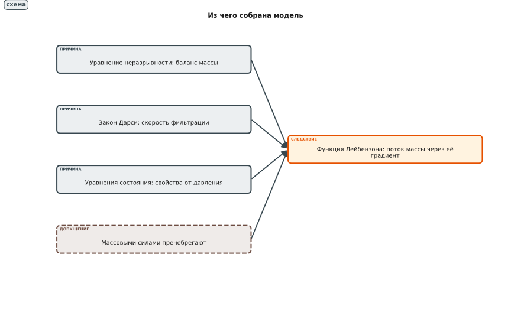

Путь › Что движет жидкость и как это описать › Шаг 9 из 60
Из чего складывается модель течения
В книге: «Математическая модель неустановившейся фильтрации упругой жидкости в упругой пористой среде» стр. 478
Опирается на: шаг 1 «Почему пласт отвечает скважине» (предпосылка), шаг 8 «Какие свойства зависят от давления» (предпосылка)
Суть
Модель упругой фильтрации собирают из трёх частей: баланса массы, закона Дарси и уравнений состояния.
Без массовых сил систему упрощают через функцию Лейбензона.
Пороговая идея. Нужны разные уравнения: сохранение массы, закон движения и связи свойств с давлением. модель
Как это работает
Три части модели
Модель строят из трёх групп уравнений. Уравнение неразрывности — баланс массы жидкости в элементе пористой среды. стр. 478
«Для вывода основных дифференциальных уравнений фильтрации упругой жидкости в упругой пористой среде необходимо воспользоваться уравнением неразрывности потока, уравнениями движения (законом Дарси) и уравнениями состояния пористой среды и насыщающей ее жидкости.»

Закон Дарси связывает скорость фильтрации с проницаемостью, вязкостью и движущими силами. Движущая сила — градиент давления, то есть крутизна его изменения в пространстве. стр. 478
Уравнения состояния связывают плотность, пористость, проницаемость и вязкость с давлением. стр. 478
В балансе массы есть дивергенция — мера чистого оттока из окрестности точки. Накопление жидкости в порах компенсируется оттоком. стр. 478
Упрощение
Затем пренебрегают массовыми силами — силами, пропорциональными массе, например силой тяжести. Это отдельное допущение. стр. 478
«после пренебрежения массовыми силами и введения обобщенной функции Лейбензона,»
Тогда вводят обобщённую функцию Лейбензона. Это интеграл по давлению от отношения проницаемости к вязкости, умноженного на плотность. стр. 478
Поток массы записывают через градиент этой функции. Он направлен в сторону её убывания. В балансе появляется лапласиан — сумма вторых пространственных производных. стр. 478
Отбросить массовые силы — не простое переобозначение давления. Это допущение упрощённой модели. стр. 478
По шагам
Как собрать модель
- Запишите уравнение неразрывности, закон Дарси и уравнения состояния. стр. 478
- Пренебрегите массовыми силами в рамках упрощённой модели. стр. 478
- Введите функцию Лейбензона и выразите через неё поток массы. стр. 478
Формулы
Баланс массы: накопление жидкости в порах компенсируется оттоком. стр. 478
| Обозначение | Что это | Единицы |
|---|---|---|
| $m$ | пористость | безразмерная |
| $\rho$ | плотность жидкости | кг/м³ |
| $t$ | время | с |
| $\mathbf{w}$ | вектор скорости фильтрации | м/с |
Уравнение Дарси для скорости с учетом массовой силы. стр. 478
| Обозначение | Что это | Единицы |
|---|---|---|
| $\mathbf{w}$ | вектор скорости фильтрации | м/с |
| $k$ | проницаемость пласта | м² |
| $\mu$ | динамическая вязкость | Па·с |
| $p$ | пластовое давление | Па |
| $\rho$ | плотность жидкости | кг/м³ |
| $\mathbf{f}$ | вектор удельной массовой силы в записи Дарси | м/с² |
Свойства жидкости и породы в общей модели могут быть функциями давления. стр. 478
| Обозначение | Что это | Единицы |
|---|---|---|
| $\rho$ | плотность жидкости | кг/м³ |
| $m$ | пористость | безразмерная |
| $k$ | проницаемость пласта | м² |
| $\mu$ | динамическая вязкость | Па·с |
| $p$ | пластовое давление | Па |
Баланс массы после записи пространственной части через лапласиан функции Лейбензона. стр. 478
| Обозначение | Что это | Единицы |
|---|---|---|
| $m$ | пористость | безразмерная |
| $\rho$ | плотность жидкости | кг/м³ |
| $t$ | время | с |
| $P$ | обобщенная функция Лейбензона | кг/(м·с) |
Поток массы в направлении убывания функции Лейбензона. стр. 478
| Обозначение | Что это | Единицы |
|---|---|---|
| $\rho$ | плотность жидкости | кг/м³ |
| $\mathbf{w}$ | вектор скорости фильтрации | м/с |
| $P$ | обобщенная функция Лейбензона | кг/(м·с) |
Зависимости свойств от давления сохраняются и при введении функции Лейбензона. стр. 478
| Обозначение | Что это | Единицы |
|---|---|---|
| $\rho$ | плотность жидкости | кг/м³ |
| $m$ | пористость | безразмерная |
| $k$ | проницаемость пласта | м² |
| $\mu$ | динамическая вязкость | Па·с |
| $p$ | пластовое давление | Па |
Интегральное определение функции Лейбензона. стр. 478
| Обозначение | Что это | Единицы |
|---|---|---|
| $P$ | обобщенная функция Лейбензона | кг/(м·с) |
| $k$ | проницаемость пласта | м² |
| $\mu$ | динамическая вязкость | Па·с |
| $\rho$ | плотность жидкости | кг/м³ |
| $p$ | пластовое давление | Па |
Что это значит для данных
Давление, функция Лейбензона и поток массы — разные переменные модели.
- Вход
- Зависимости свойств от давления, давление и сведения о массовых силах.
- Выход
- Скорость и поток массы, изменение массы в порах.
- Где ломается
- Форма через функцию Лейбензона в этой постановке получена без массовых сил.
Где здесь ручной труд специалиста
- Входные данные
- Профиль давления и зависимости свойств.
- Ручные шаги
- Проверить единицы, обозначения и допущения исходной системы.
- Точки суждения
- Решить, допустимо ли не учитывать массовые силы.
- Время
- Проверка требует понимания геометрии и заданных сил.
- Типичные ошибки
- Назвать функцию Лейбензона пластовым давлением.
Аналогия модель
Как заменить набор связанных преобразований общей промежуточной функцией, не меняя исходной связи после принятых упрощений.
Где аналогия перестаёт работать: Это интеграл физических коэффициентов, не произвольное преобразование признаков.
Новые понятия
- уравнение неразрывности
- Баланс массы жидкости в элементе пористой среды. модель
- закон Дарси
- Связь скорости фильтрации с проницаемостью, вязкостью и движущими силами. модель
- массовая сила
- Сила, пропорциональная массе жидкости, например сила тяжести. модель
- градиент
- Направление и крутизна пространственного изменения величины. модель
- дивергенция
- Мера чистого оттока в окрестности точки. модель
- лапласиан
- Сумма вторых пространственных производных. модель
- обобщенная функция Лейбензона
- Интеграл по давлению от произведения отношения проницаемости к вязкости на плотность. стр. 478
- уравнение состояния
- Связь свойств среды или жидкости с давлением. модель
Проверь себя
Верный ответ: Уравнение неразрывности; Закон Дарси; Уравнения состояния жидкости и среды
Автор называет неразрывность, закон Дарси и уравнения состояния. Где это в тексте (стр. 478) →
Расставьте шаги построения модели по порядку.
Перетащите пункты (мышью или пальцем за ⠿) или двигайте кнопками ↑ ↓.
- Пренебрегите массовыми силами в рамках упрощённой модели.
- Запишите уравнение неразрывности, закон Дарси и уравнения состояния.
- Введите функцию Лейбензона и выразите через неё поток массы.
Верный ответ: Запишите уравнение неразрывности, закон Дарси и уравнения состояния. → Пренебрегите массовыми силами в рамках упрощённой модели. → Введите функцию Лейбензона и выразите через неё поток массы.
Функцию Лейбензона вводят после записи системы и отказа от массовых сил. Где это в тексте (стр. 478) →
Источник
Все утверждения шага с дословной цитатой автора и страницей книги (по PDF).
Для построения модели нужны уравнения неразрывности, движения по закону Дарси и состояния жидкости и пористой среды. допущение
«Для вывода основных дифференциальных уравнений фильтрации упругой жидкости в упругой пористой среде необходимо воспользоваться уравнением неразрывности потока, уравнениями движения (законом Дарси) и уравнениями состояния пористой среды и насыщающей ее жидкости.»
При переходе к форме через функцию Лейбензона пренебрегают массовыми силами. допущение
«после пренебрежения массовыми силами и введения обобщенной функции Лейбензона,»
На этот шаг опираются: шаг 10 «Одно уравнение для давления», шаг 22 «Как градиент превращается в дебит», шаг 25 «Уравнение для скорости фильтрации», шаг 28 «Давление из профиля скорости».